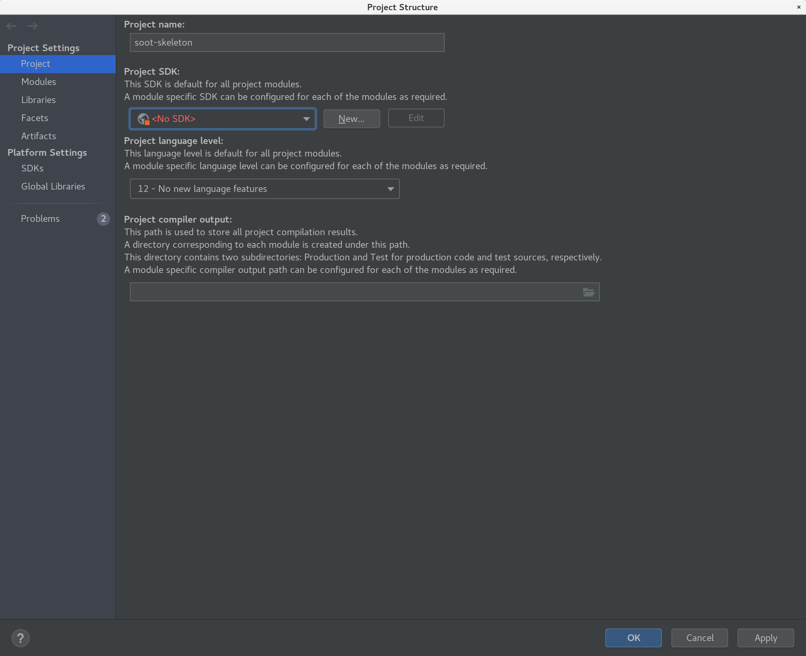
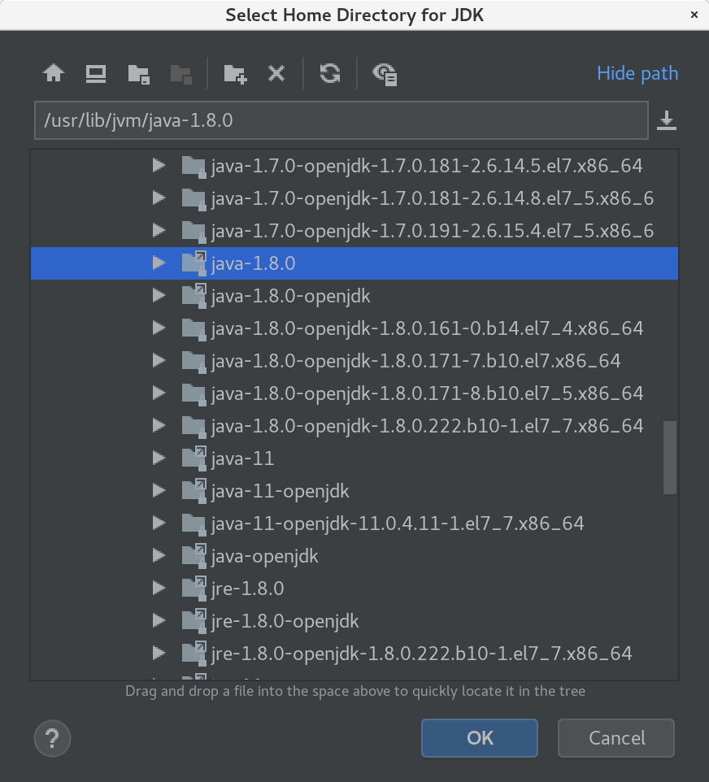
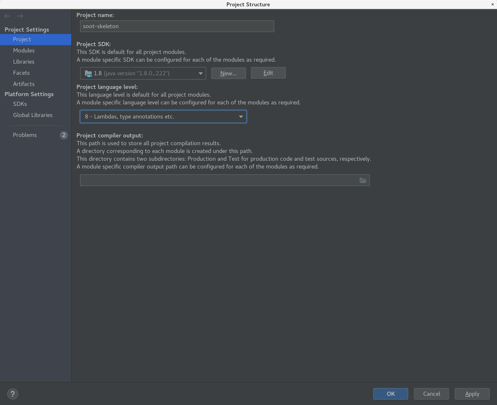
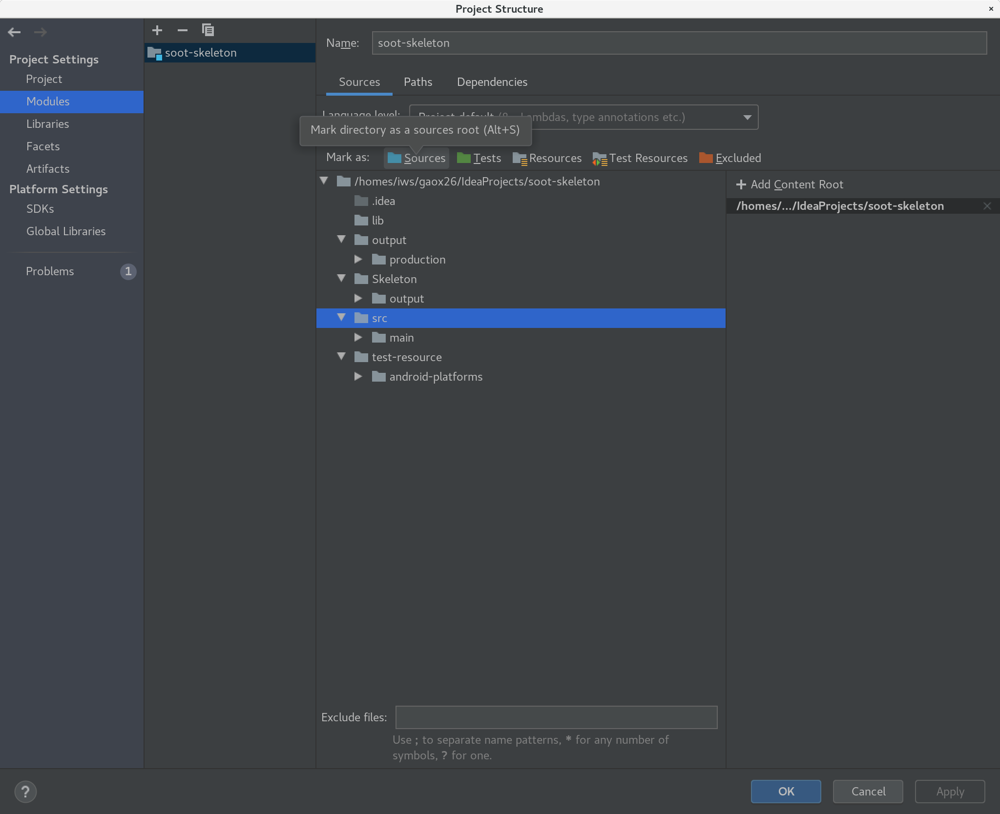
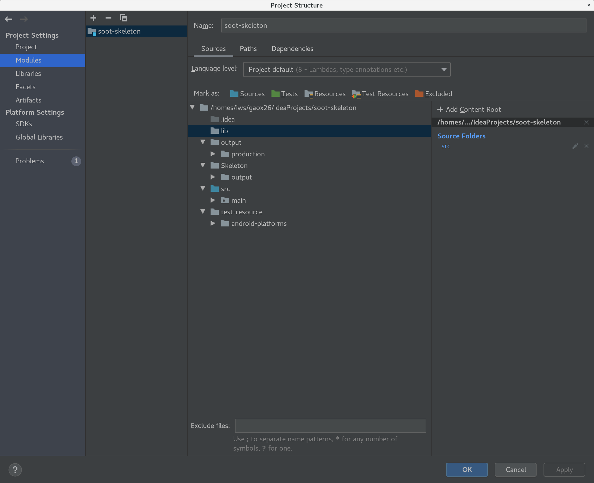
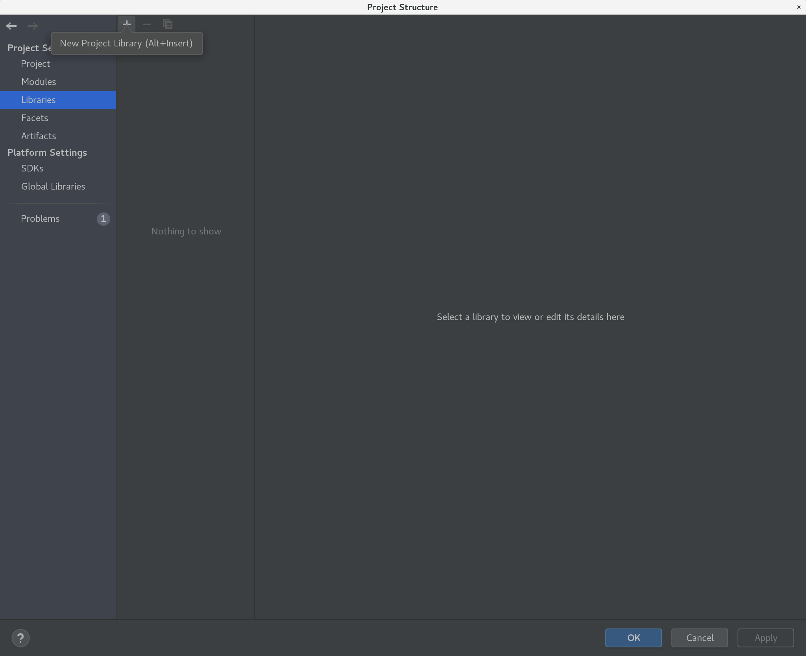
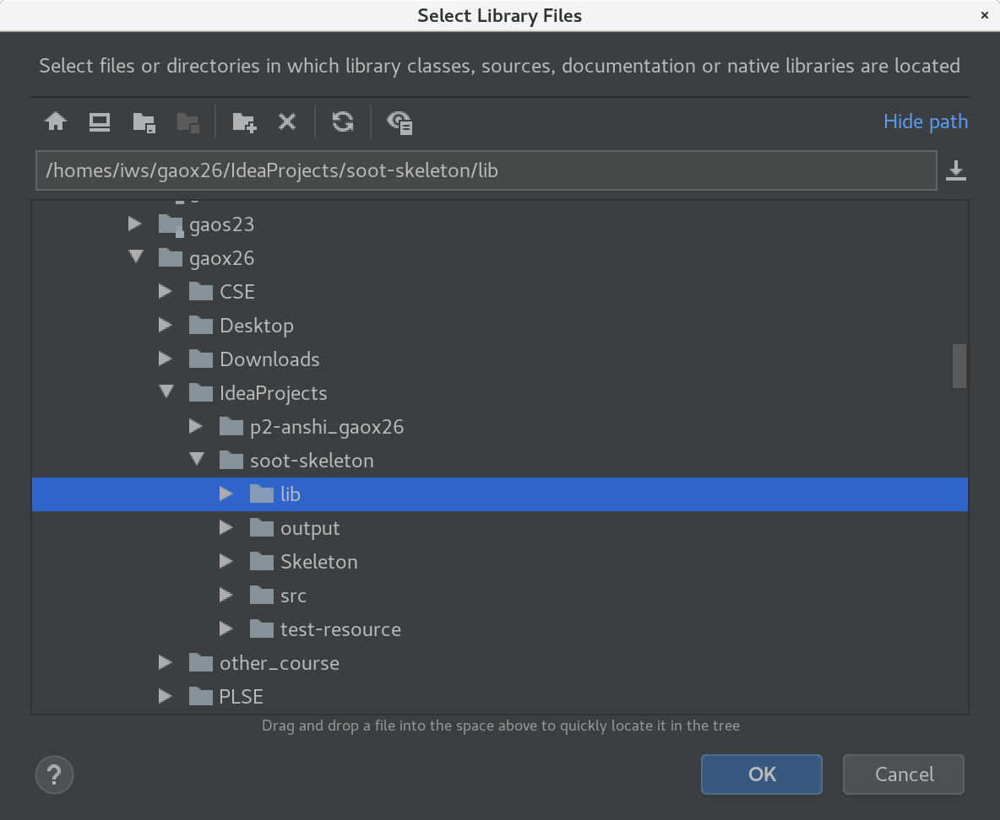
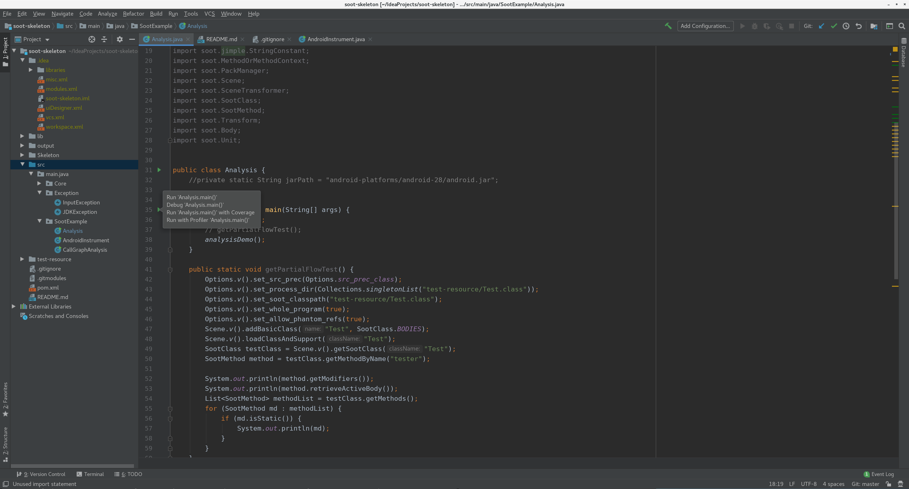

Developer Setup Intro¶
This page is used as a guide for developer of soot-skeleton. One thing to notice is that we’ll will gradually make this to be a maven project, while so far the developing is still based on IDE and git version control. For those who are new to this project, this doc is a good way to start. And I’ll keep updating this page as developing the soot-skeleton.
Getting Start¶
For this project, the recommended IDE is intellij. The main language we’ll use is Java, and the jdk version we prefer is 1.8. After you clone the repo from github and open the project in Intellij, so press ⌘ Command + ; . (this shortcut is for mac, for windows or linux please go to file/Project Structure.) If you do it properly, following Project Structure page is going to pop up.

SDK¶
Then we need to setup the developing Java jdk. Press the option that shows “

Then the project structure should look the same as below.

Module Structure¶
The next thing is to setup the module structure. First, click the module at the side bar. Below picture is what you would expect to see.

Then click src folder, and click the blue “Sources” button to make the directory as a source root. Then you will expect to see following picture.

Libraries (Final Step)¶
The final step is to link project to the lib we’ll use. Just lick the “Libraries” button at the side bar. You will something just like the below picture.

Then click the add sign that shows “New Project Library”. And go ahead and find the lib folder in soot-skeleton and click OK. AND WE ARE DONE!

Finally, let’s check the Analysis.java file in the SootExample folder. You will see something like below. Notice that you can directly run this file. This developing approach will be temporary, but we integrated Maven framework into this project, we’ll move to test and develop things upon Maven framework. But still, so far we will use it as our main source. After we integrate Maven, I’ll update this tutorial file.
